| Platform
Changes |
|
New platforms
|
PowerPC 64-bit, Windows 7, and Ubuntu LTS 10.04 have joined the line-up of supported configurations
for which SWT and Eclipse are routinely built and tested.
|
| Opening a file from the command line |
Based on work in SWT and the native launcher, the
Eclipse IDE now supports opening a file from the command line, or opening a file that
has been associated with the Eclipse executable. If an instance of Eclipse is already running,
that instance will open the file. Otherwise, a new instance will be started.
|
| Resource filters |
Projects and folders can now be configured to omit some of their
children in the file system from the workspace. The filtered files and directories will not
appear in views such as the Project Explorer, and won't be processed by
workspace facilities such as builders. Filters can be configured on the Resource Filters
page in the Properties dialog. When a filter is added, the following attributes have to be set.
- Filter type - determines whether only matching resources should be visible (Include) or whether all matching resources should be hidden (Exclude)
- Applies to - determines the type of resources that should be affected (files, folders, or both)
- All children (recursive) - indicates that the filter should be used for the entire resource subtree
- File and Folder Attributes - specifies the filter condition
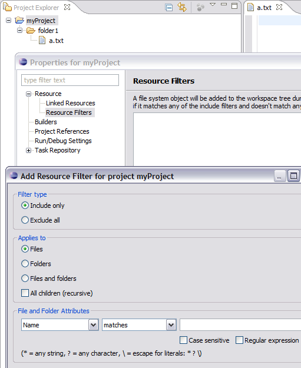 |
| Dynamic path variables |
Linked resources can define their locations
relative to user-defined path variables.
Now, a set of predefined path variables are available:
- PROJECT_LOC - pointing out the project location
- WORKSPACE_LOC - pointing out the workspace location
When these variables are used, they are dynamically resolved based on the context
of a linked resource. Those predefined variables may be also used to build user-defined variables.
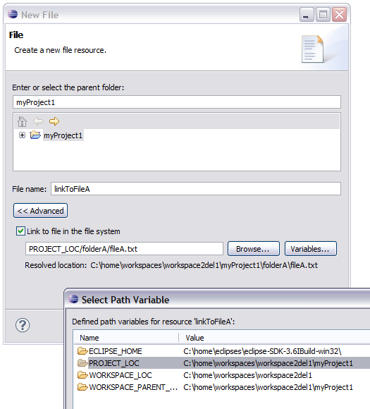
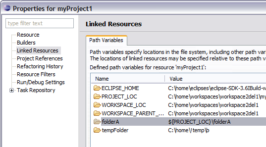
|
| Virtual folders |
Virtual folders are a new type of resource that exist only in the workspace and
are not backed by a directory in your file system. These folders can be used to create more flexible project structures
by bringing together links to files spread throughout your file system.
Since virtual folders do not exist in the local file system, they can only
contain other virtual folders and linked resources.
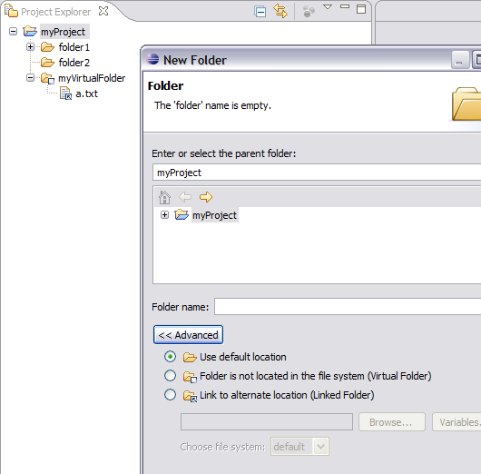
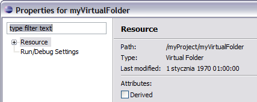 |
| File system import wizard |
The file system import wizard now supports creating
virtual folders and linked files and folders.
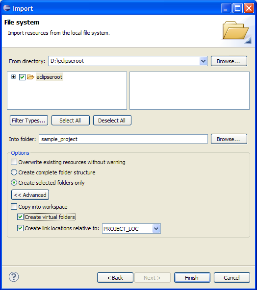
Linked files and folders can also be created relative to a path variable. |
| Browser can use WebKitGTK+ |
Linux users can now use WebKitGTK+ instead of Mozilla as the Browser control's native renderer. See
Can the Browser use the WebKit renderer on GTK?.
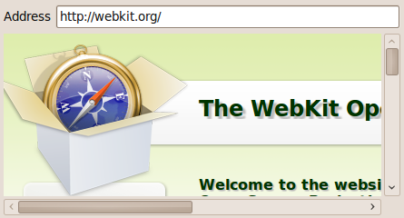
|
| UNIX file permissions |
The full set of UNIX file permissions are now supported.
The attributes can be managed from the Resource Properties page.
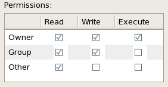
|
|
New features in Open Resource dialog
|
The Open Resource dialog supports three new features:
• Path patterns: If the pattern contains a /, the part before the last / is used to match a path in the workspace:
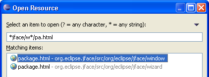
• Relative paths: For example, "./T" matches all files starting with T in the folder of the active editor or selection:
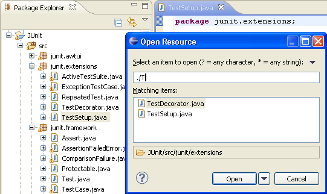
• Closer items on top: If the pattern matches many files with the same name, the files that are closer
to the currently edited or selected resource are shown on top of the matching items list.
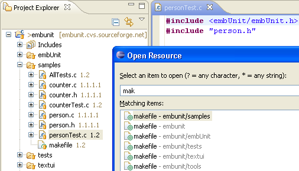
|
| Progress shown in platform task bar |
Progress for long running operations is now shown in
the platform task bar on platforms that support this feature. Progress is shown for
long running tasks such as workbench startup, install, update, and repository synchronization.
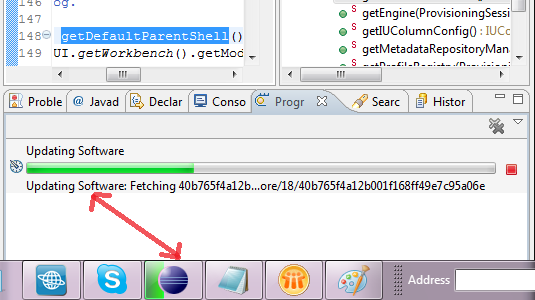
|
| Canceling long-running operations in wizards |
There is now a stop button adjacent to the progress bar when a wizard is running
a long operation. You can press the stop button (or the Enter or Space key) to cancel the operation
being shown in the progress bar.
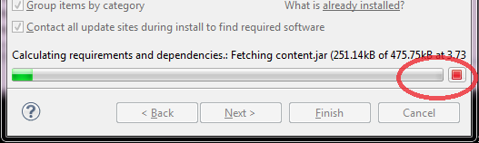
|
| Quick Access now shows keybindings for commands |
Quick Access (Ctrl+3) now shows keybindings for commands so you can
save yourself from all that typing and just use the keyboard shortcut the next time you need
to run a command.
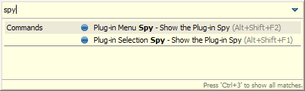 |
| Search keywords in wizards |
The File > New, File > Import...,
and File > Export... wizards now support searching by keyword. You can type
a search term that doesn't appear in the wizard name, and the term will match against
search keywords registered for that wizard. For example if you search for "zip" or
"directory" in the import wizard, you will be shown the wizards for importing from
archives or the file system, respectively.
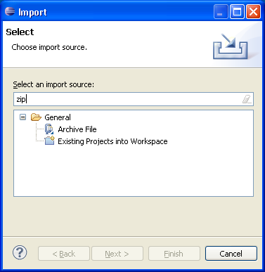
|
| Local History pruning can be disabled |
The local history size constraints can now be disabled.
Users that never want to discard history no longer need to wait on shutdown for
history cleanup to occur. To disable history cleaning, go to
 Preferences > General > Workspace > Local History
and disable Limit history size.
Note that when this option is chosen, disk usage for the workspace local history
will continue to grow indefinitely.
Preferences > General > Workspace > Local History
and disable Limit history size.
Note that when this option is chosen, disk usage for the workspace local history
will continue to grow indefinitely.
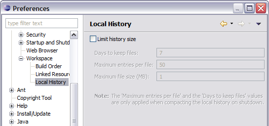 |
| Hide empty fast view bars |
In order to clean up the UI and gain some space in the trim area, there is a new preference on the
General > Perspectives
page that allows you to
hide the Fast View Bar when it's empty. Note that this option does not inhibit the functionality; if there are
fast views in the perspective (or you make a view a fast view) the bar will be shown regardless of the preference
setting.
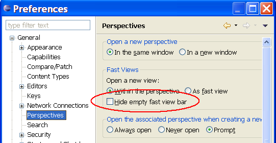 |
| Edit linked resource location |
Linked resource locations can now be changed
by selecting the Edit... button in the Resource Properties page.
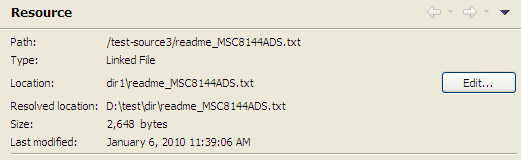
|
| File and folder operation dialog |
When dragging files and folders from the operating system
shell (such as Windows Explorer) onto Project Explorer, a dialog appears
to let you choose how the files should be imported.
The dialog allows you to simply copy files and folders (the traditional operation)
but also easily create linked resources and virtual folders hierarchies in a project folder
by simply drag and dropping files and folders.
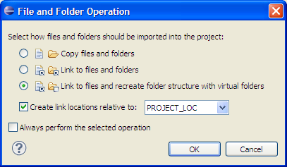
The dialog also creates project path variable relative linked resources automatically,
so that projects remains portable while using linked resources.
|
| Install/Update Changes |
| Grouping by license in install wizard |
Software to install is now grouped by license
in the Review Licenses page of the install wizard. This means you no longer need to select each item being
installed to ensure all applicable licenses have been reviewed.
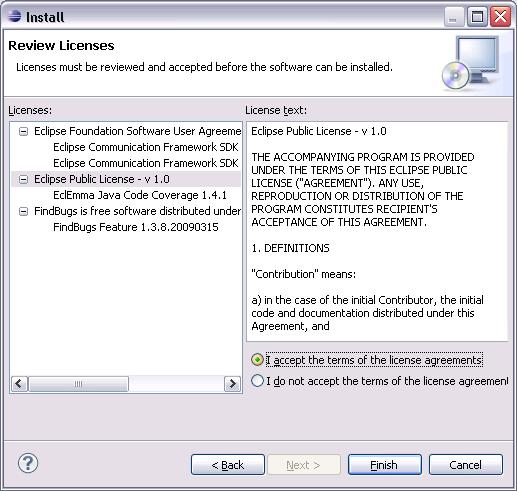
|
| NTLMv2 proxy support |
Support has been added to the platform for communicating
with NT Lan Manager proxies (NTLMv2). You can now install and update software
in the Eclipse user interface when running behind proxies that use this protocol. |
| Comparing configurations in the Installation History |
The Installation History page now allows you to compare two different
installation history configurations. Now you can more easily see what was installed, uninstalled, or updated
in the various installation configurations. You can also delete unwanted installation configurations
in order to reduce clutter and free up disk space.
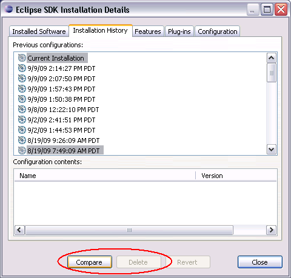
|
| Editor Changes
These changes apply to all textual editors in the SDK. |
|
All folded annotations are now visible in the rulers
|
Until now, only errors and warnings were shown in the vertical and overview ruler when code is folded. As of this release,
all annotations from the folded region are visible:
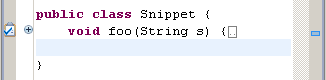
|
| Show ruler annotation tooltip command |
The annotation tooltip that appears when you hover over
an icon in the vertical ruler on the left of a textual editor can now also be shown by pressing a key sequence.
However, out of the box no key sequence is defined for that. Go to the
General > Keys
preference page to assign a key sequence to the Show Ruler Annotation Tooltip command.
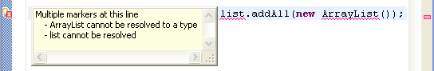
|
|
Better handling of unmappable characters on save
|
There is now better support for characters that cannot be saved with the current encoding:
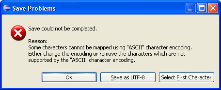
|
|
Print dialog remembers user selected options
|
The Print dialog now remembers the following user selected options for all textual editors until the workbench is shutdown:
- Selected printer
- Print to file
- Printer preferences: These are printer specific options like paper size, page order orientation etc.
|
| Team/CVS
Changes |
| Enhanced Open in Compare editor menu |
The context menu of the Compare editor contains Open and Open With actions,
which open the file in full-fledged editors. Now, these actions set the selection and the caret position
in the newly opened editor based on the selection in Compare Editor.
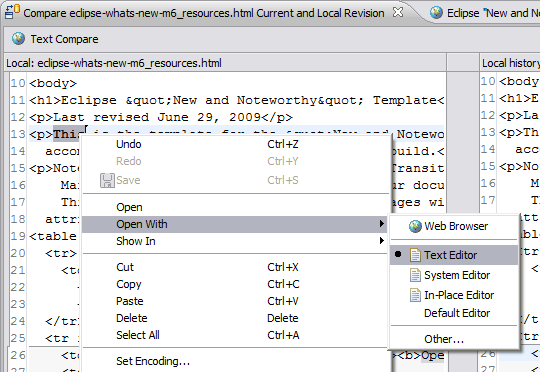
|
| Apply patch in Synchronize view |
The Synchronize view now allows to synchronize with a patch either by pasting
the patch into the view or by using the Synchronize wizard. If you prefer
this new way of applying patches, you can replace the modal Apply Patch
dialog with the Synchronize view by selecting the
new Apply patch in Synchronize view option on the
Team
preference page:
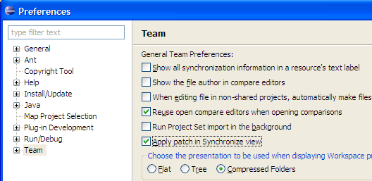
When synchronizing with a patch the drop-down menu in the Synchronize view offers patch options
including Reverse, Fuzz Factor..., Generate .rej File
and Ignore Leading Path Segments....
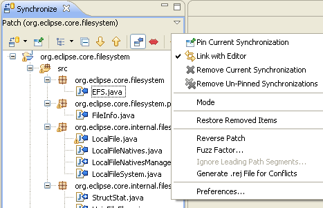
Moreover the Synchronize with Patch wizard displays a page with inaccessible projects
referred from within the patch. Projects selected on this page will be opened prior to synchronization.
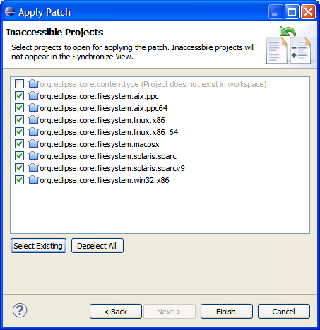
|
| "Link with Editor" in Synchronize view |
The Synchronize view can now be linked
with the active editor. Moreover, the view is now one of the 'Show In' targets when in the Synchronize perspective.
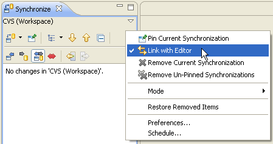 |
| Logical models in Commit wizard |
The Commit wizard now shows logical
models just like the Synchronize view does.
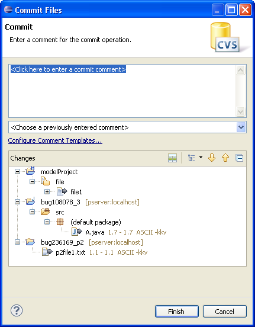 |
| Sorted diffs in patches |
The Create Patch action now creates patches
that contain changes sorted by project and file path. This makes comparing patches much easier. |
| Usability enhancement to Configure Branches and Versions |
Now the Configure Branches and Versions action in the repository view is enabled for multiple selections.
This means that you are able to choose any file in the selection as a tag source for all selected folders.
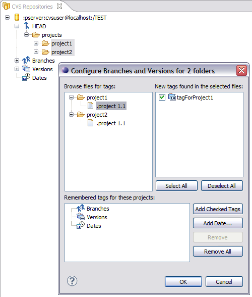
|
| Warning about possible inaccuracy in comparison result |
The compare framework caps the result accuracy for large files. This used to happen silently, which
confused users. Now when the faster algorithm is used a warning label appears.
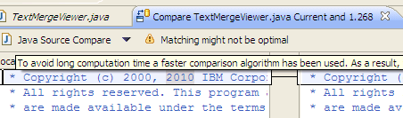
|
| Debug
Changes |
| Columns in Expressions view
|
The Expressions view now supports column display
just like the Variables view. To switch to a column
presentation select Layout > Show Columns from the view's menu.
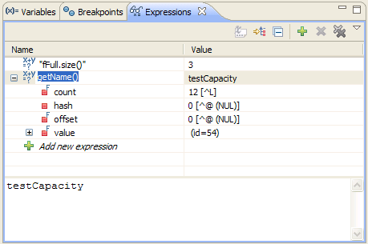
Users can also quickly edit existing expressions in-line by clicking on the
expression in the Name column. To add a new expression, click on the
Add new expression place-holder at the bottom of the list.
|
| Breakpoint detail panes
|
The breakpoints view now provides detail panes
to display and edit breakpoint properties. Use the view's Layout menu
to configure the orientation of the detail pane or hide it.
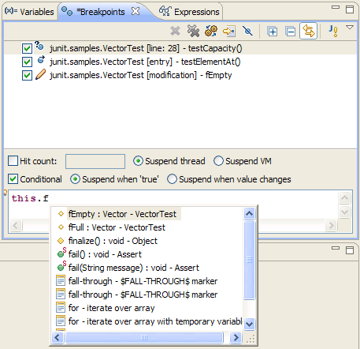
For example, the detail pane for a Java line breakpoint allows its
condition to be edited in place with content assist. Use the File > Save (Ctrl-S)
action to save a condition that has been edited. Check box and radio button properties are
saved immediately.
|